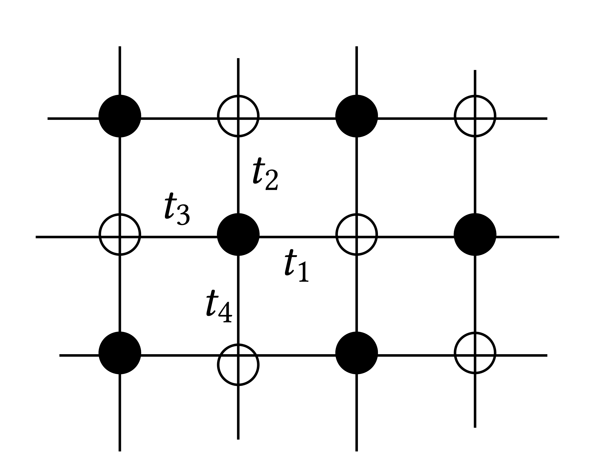
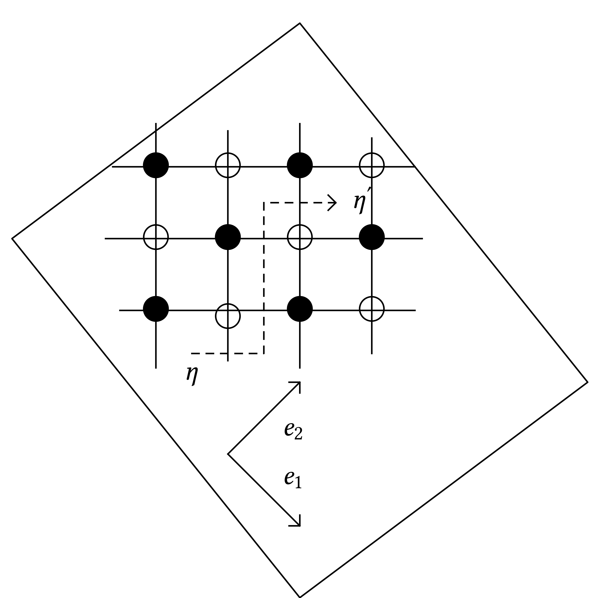
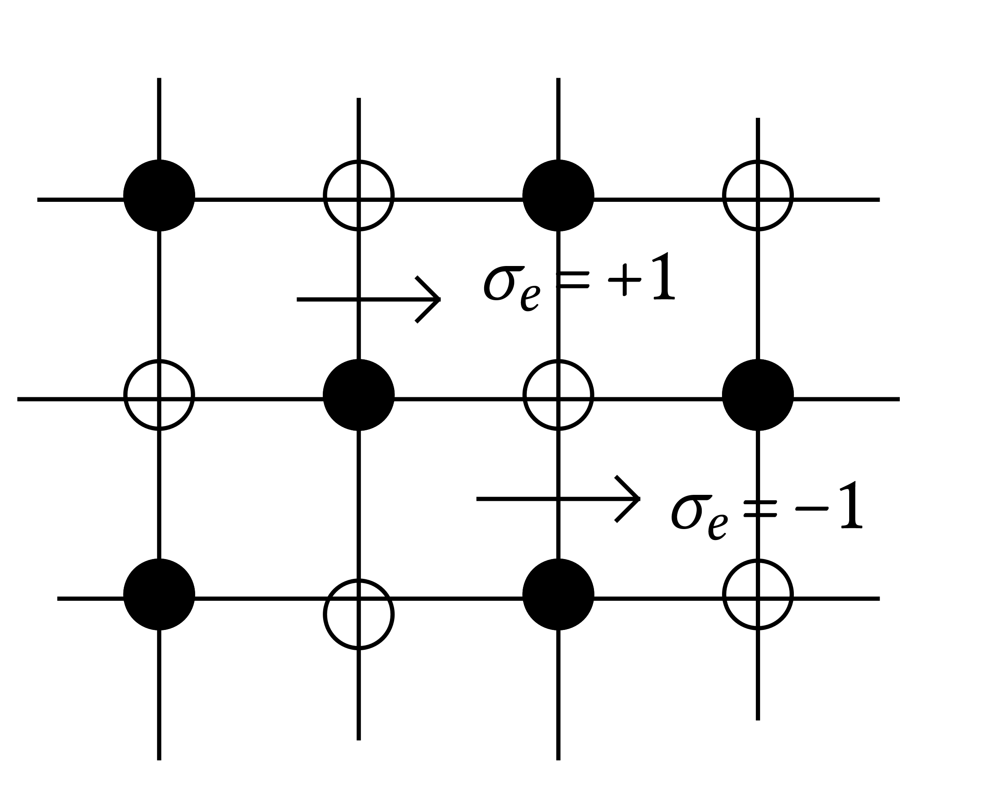
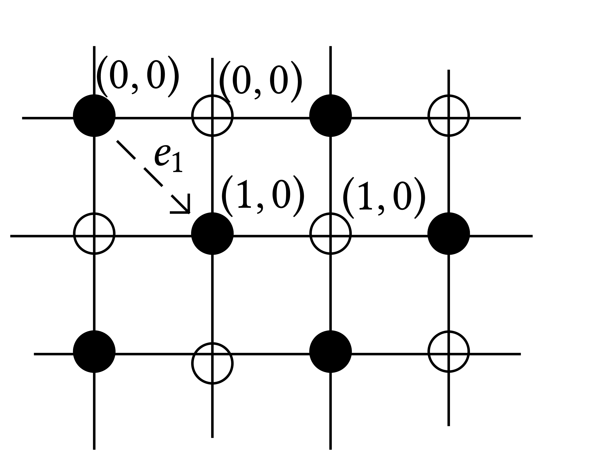

INI Seminar 20181008 Toninelli
Giuliani, Mastropietro, Toninelli (AIHP P&S 2015, J. Stat. 2017, + forthcoming)
Interacting dimer model
A perturbation of an integrable model, solved via renormalization group techniques.
Today: the model, the results and some discussion.
The model
 |
Planar bipartite graph \(G = (V, E)\). A dimer configuration (perfect matching). A subset \(M \subseteq E\) of edges of \(G\) such that every vertex of the graph is contained by exaclty one edge. For us \(G \subseteq \mathbb{Z}^2\) with periodic boundary conditions of period \(L\). \(G\) is a weidghted graph: for every edge there is a weight \((t_e > 0)_{e \in E}\). \(4\) weights types for each type of edge (different directions, different initial and final colors) |
For us \(\Lambda =\mathbb{T}_L\) with periodicity \(L\) in both directions \(e_1, e_2\): (\(2 L^2\) vertices) Height function. For any configuration we can associate an integer valued functions on the faces (vertices of the dual lattice \(G^{\ast}\)). For any face \(\eta \in G^{\ast}\) we let \(\eta_M : \text{\{faces\}} \longrightarrow \mathbb{N}\) |
 |
where \(\sigma_e \in \{ \pm 1 \}\) is taken according to the rule shown on the right. This definition of \(\eta\) does not depends on the path chosen to go from \(\eta\) to \(\eta'\) and we choose arbitrarily \(h_M (\hat{\eta}) = 0\) for a fixed face \(\hat{\eta}\).
Remark |
 |
A few results on the non-interacting dimer model.
Let \(\Pi_{L, \underline{t}}\) the measure on \(\mathbb{T}_L\). It has a limit as \(L \rightarrow \infty\) \(\Pi_{\underline{t}}\) with an explicit and determinantal description (Kasteleyn theory).
The free energe \(F (\underline{t}) = \lim_{L \rightarrow \infty} L^{- 1} \log Z_L\) exists and it is explicit.
Comments on the weights \(\underline{t}\):
one can multiply all the weights by the same factor and this gives the same model. Therefore on can take \(t_4 = 1\) w.l.o.g.
they are chemical potentials fixing the density of the four type of edges: \(\rho_1, \rho_2, \rho_3, \rho_4\). Namely \(\rho_j = \Pi_{\underline{t}} (e \in M)\), where \(e\) is a fixed edge of type \(i\).
they fix the global slope of the height function: If we let
then \(s_i = s_i (\underline{t})\). (Remark: suppose \(t_1 = t_3 = t_h\) and \(t_2 = t_4 = t_v = 1\), then by symmetry \(s_1 = s_2 = 0\).)
Correlations. For the moment take \(\underline{t} = (1, 1, 1, 1)\). Then we have a polynomial decay of correlations for the two point function:
We consider a complex function \(K\) of types of edges such that \(K (e) = t_1, t_2 (i), t_3 (- 1), t_4 (- i)\) for edges of type \(1, 2, 3, 4\) respectively and we let \(K_i\) the value of \(K (e)\) for an edge of type \(i = 1, 2, 3, 4\).
Theorem
where \(w_k, b_k\) are the white and black vertices of the \(k\)-th edge. Our coordinate system is chosen such that a black vertex of coordinates \((x_1, x_2)\) then the right adjacent vertex is also at coordinates \((x_1, x_2)\). |
 |
The matrix \(\mathcal{K}^{- 1}\) is given by
with
Comment: We can consider a matrix \(\mathcal{K}\)
Therefore the result of the theorem can be also written
Exercise
Remark
where
with
are the derivatives at the poles.
Corollary
Note that \(| \phi_+ (x - y) |\) behaves like a distance between in \(x, y\) since \(\alpha_{\omega}, \beta_{\omega}\) are not colinear in the complext plane.
Height function and the GFF for the non–interacting model
Let \(\Delta_{\eta, \eta'} = h (\eta) - h (\eta')\):
independently of \(\underline{t}\) (in the region where \(\mu\) has two simple zeros, liquid phase).
The \(n\)-th cumulant of the differences in height \(\Delta_{\eta, \eta'}\) satisfies
so the rescaled limit of \(\Delta_{\eta, \eta'}\) is Gaussian, namely \(\Delta_{\eta, \eta'} / (\operatorname{Var}_{\Pi_{\underline{t}}} (\Delta_{\eta, \eta'}))^{1 / 2} \rightarrow \mathcal{N} (0, 1)\).
Take \(\varphi\) a \(C^{\infty}\) with compact support on \(\mathbb{R}^2\) with average \(0\). Consider the rescaled height function \(h_{\varepsilon}\) given by
then
with \(g (x) = - \frac{1}{2 \pi^2} \log | \phi_+ (x) | \approx \frac{1}{2 \pi^2} \log \frac{1}{| x |}\). So \(h_{\varepsilon}\) converges to a log correlated Gaussian random field.
The interacting dimer model
In the non–interacting the weight of a configuration \(w (M) \propto \prod_{e \in M} t_e\). In the interacting case we take \(\lambda \in \mathbb{R}\) small and
where \(\)
where \(\tau_x M\) is the configuration \(M\) translated by \(x \in \mathbb{Z}^2\). Examples:
Model 1:
Model 2:
Remark: model 2 is equivalent to the \(6\)–vertex model with weights all \(1\) except for one configuration with weight \(2 e^{\lambda}\).